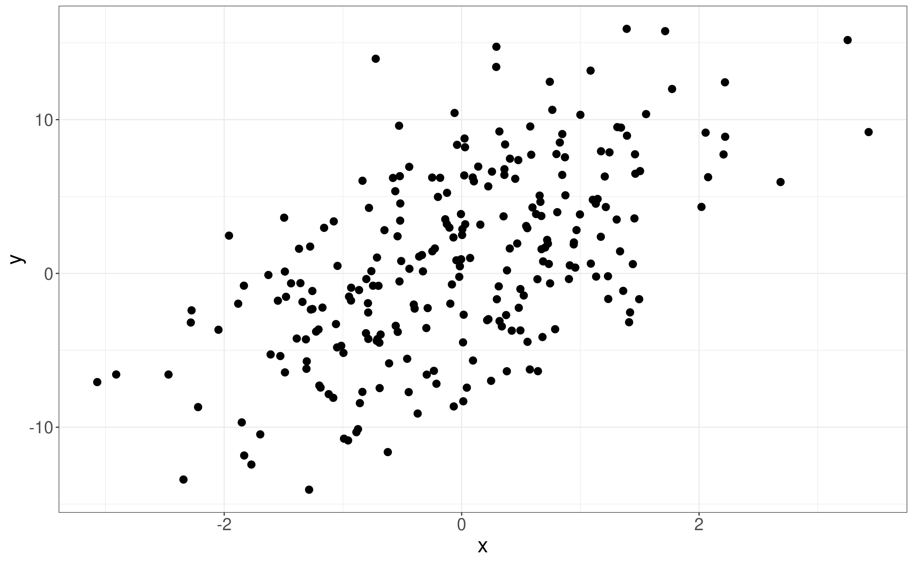
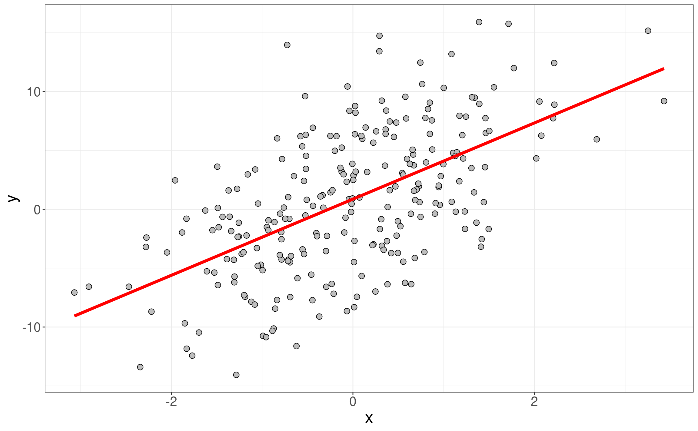
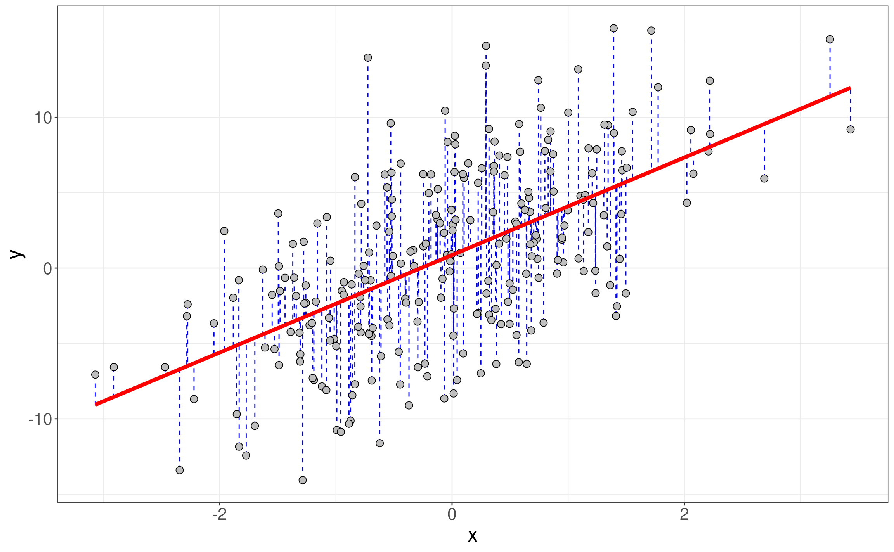
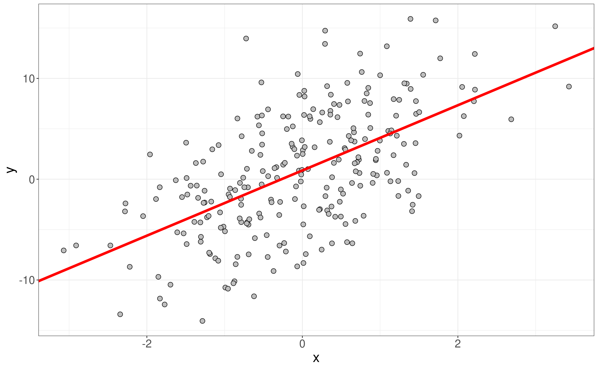
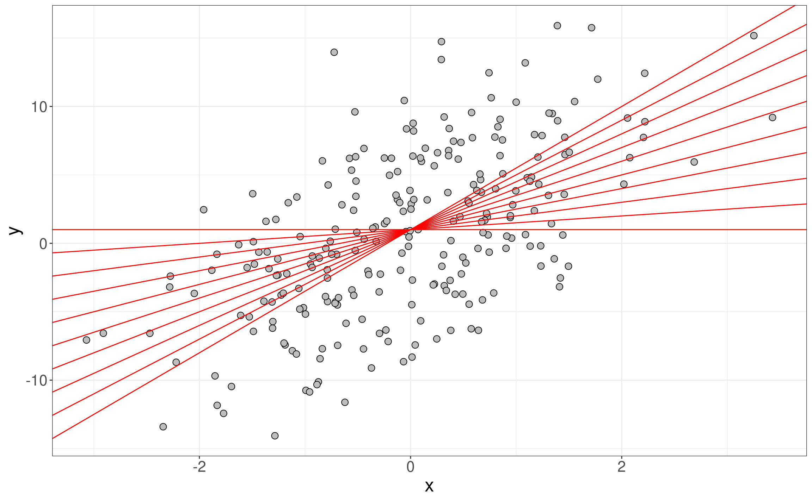
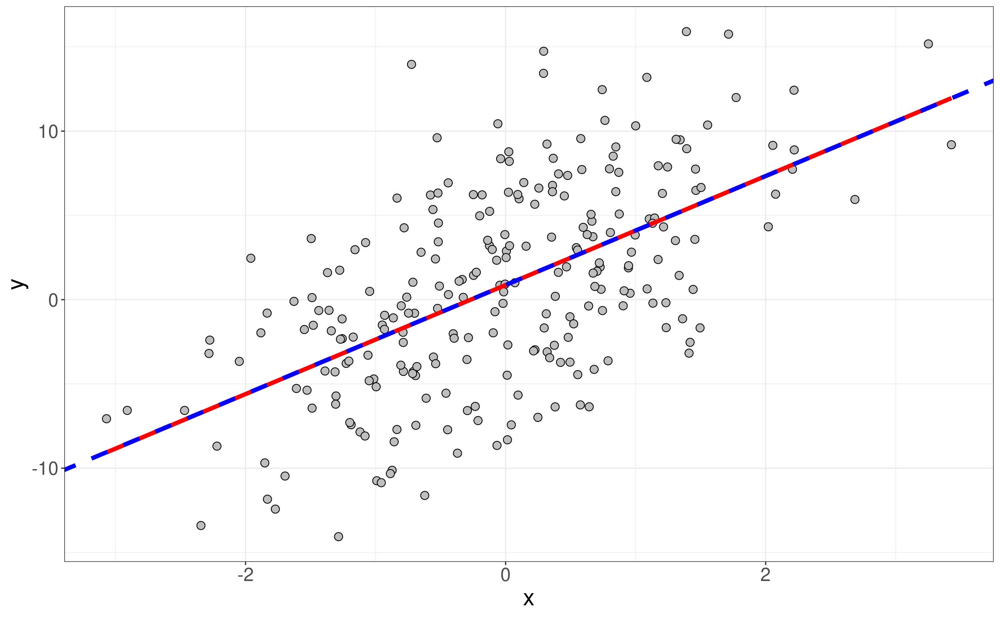
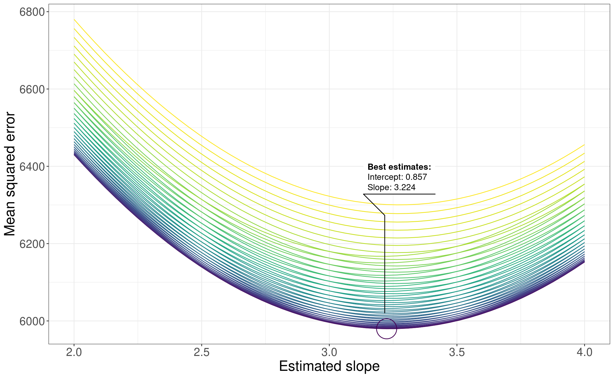

#|include: false
#saveRDS(theme_cfm, "theme.rds")Iteration and Functionals
Overview
Today we’re going to be using iteration to solve our single statistical problem of the course: fitting a linear regression line of best fit.
Setup
Everything today can be handled with base R and the tidyverse. Specifically, we’ll be focusing on purrr. We also load ggforce for bonus points.
Ordinary least squares regression and lines of fit
Ordinary least squares (OLS) regression is used to create a line of best fit. Let’s begin by creating some example data. After randomly generating some normally distributed data, we’ll make another vector that has a linear association as follows:
- If
xincreases by 1, thenyincreases by 3 on average - If
xis equal to 0, thenyis equal to 1, again on average - Finally, we add some randomly distributed noise
#This is key for reproducing results!!
set.seed(654321)
#Create 250 randomly generated points
x <- rnorm(250)
#Now make some data that is going to be linearly associated with x, this has three components:
# If x increases by 1, then y increases by 3 on average
# If x is equal to 0, then y is equal to 1 (on average)
# Finally, we add some randomly distributed noise
y <- 3 * x + 1 + rnorm(250, sd = 5)
dat_curr <- tibble(x = x, y = y)
dat_currWe can see from the plot there’s a clear linear trend:
Code
ggplot(dat_curr) +
geom_point(aes(x = x, y = y), size = 3) +
theme_cfm
OLS regression fits a linear that minimizes the sum of squared difference between the predicted values (the red line on the plot below) and the observed values (gray points in the plot).
Code
ggplot(dat_curr, aes(x = x, y = y)) +
geom_point(shape = 21, color = "black", fill = "grey", size = 3) +
geom_smooth(method = "lm", color="red", linetype = "solid", linewidth = 1.75, se = FALSE) +
theme_cfm
In other words, we minimize the sum of the squared values for the blue vertical lines in this plot:

This line of best fit has a slope and an intercept. Now we could get those using the lm() command in R and then replace geom_smooth() with geom_abline() using the coefficient values from the linear regression.
#Fit the linear model
lm_curr <- lm(y ~ x, data = dat_curr)
#Get the coefficients
coef_curr <- coef(lm_curr)Linear regression slope estimate: 3.235
Linear regression intercept estimate: 0.867
ggplot(dat_curr, aes(x = x, y = y)) +
geom_point(shape = 21, color = "black", fill = "grey", size = 3) +
geom_abline(intercept = coef_curr[1], slope = coef_curr[2],
color = "red", linetype = "solid", linewidth = 1.75) +
theme_cfm
But that uses boring linear algebra. Instead, let’s try to identify the least-squares regression line ourselves by making random guesses. Essentially, let’s fit a whole bunch of lines and find the one that minimizes the sum of squared distances.

Making the random guesses
First, we want to create small function that will calculate the mean square error, the loss function we’re minimizing for our line of best fit.
#Our MSE function
mse <- function(predicted, observed){
mean(sum((predicted-observed)^2))
}Next, let’s make a random guess for our slope and intercept values and calculate our predicted values of y from our known values of x. We’ll start with our “on average” values of 3 for the slope and 1 for the intercept:
#Let's start with intercept of 1 and slope of 3
int_est <- 1
slope_est <- 3
#Calculate the MSE from the predictions of y for our values of x
first_guess <- mse(
predicted = int_est + slope_est * x,
observed = y
)Let’s also make a second guess, setting our intercept to 0 and slope to 1
int_est <- 0
slope_est <- 1
second_guess <- mse(
predicted = int_est + slope_est * x,
observed = y
)As we can see, our first guess is smaller than our second guess so it’s a better line of best fit.
first_guess[1] 6001.024second_guess[1] 7604.75But is it the best guess? For that we’ll want to try a whole bunch of intercept and slope combinations. While we could copy-and-paste our code we’re better than that so we’ll use purrr instead.
Problem 1 - Two passes using map()
Identify the slope
Fix int_est at 1 and then use purrr to look through 100 equally spaced potential values for slope_est between 2 and 4. Pick the one that minimizes the sum of squared errors and make a plot.
#Create 100 potential slopes
slope_est <- seq(2, 4, length.out = 100)
#Calculate the MSE for those slopes using purrr
mse_slope_vals <- purrr::???
#Make a data frame from the MSE values
pred_slope <- tibble(
slope = slope_est,
mse_vals = mse_slope_vals
)
#Make a plot of the results
ggplot(???)
#Find the slope with the smallest MSE loss
slope_est <- ???Identify the intercept
Next, fix your slope at the value of slope_min that you found and then evaluate 100 equally spaced estimates for the intercept ranging from 0 to 2. Again, find the intercept that minimizes our MSE loss.
#Create 100 potential estimates
int_est <- seq(0, 2, length.out = 100)
#Calculate the MSE for those slopes using purrr
mse_int_vals <- purrr::???
#Make a data frame from the MSE values
pred_int <- tibble(
int = int_est,
mse_vals = mse_int_vals
)
#Make a plot for the intercept results
ggplot(???)
#Find the slope with the smallest MSE loss
int_est <- ???Compare
Finally, report your estimates for intercept and slope and plot both it and the known line-of-best fit. Your results and plot should look something like this:
#map step 1 - the slope
slope_est <- seq(2, 4, length.out = 100); int_est <- 1
mse_slope_vals <- map_dbl(slope_est, ~mse(predicted = int_est + x * .x, observed = y))
slope_est <- slope_est[which.min((mse_slope_vals))]
#map step 2 - the intercept
int_est <- seq(0, 2, length.out = 100)
mse_int_vals <- map_dbl(int_est, ~mse(predicted = .x + x * slope_est, observed = y))
int_est <- int_est[which.min((mse_int_vals))]
est_curr <- c(slope_est, int_est)Slope estimate from map(): 3.232
Intercept estimate from map(): 0.869
plot_map <-
ggplot(dat_curr, aes(x = x, y = y)) +
geom_point(shape = 21, color = "black", fill = "grey", size = 3) +
geom_smooth(method = "lm", color="red", linetype = "solid", linewidth = 1.75, se = FALSE) +
geom_abline(intercept = int_est, slope = slope_est,
color = "blue", linetype = "dashed", linewidth = 1.75) +
theme_cfm
plot_map
Problem 2 - Being even more saavy with map2()
Although our two pass approach worked very well, it would be better to iterate through the slopes and intercepts at the same time. Fixing requires hard coding and I hate hard coding. Instead, let’s map over the slopes the estimates using map2().
An important point, since map2() does elementwise vectorization it won’t give all combinations of the slopes and the intercepts. Intead it will pair the first slope with the first intercept, the second slope with the second intercept, and so on. We’ll have to expand our potential values into a single data structure. Luckily, there’s an easy way to do this with expand.grid() in base R.
Let’s make 50 slope and intercepts using those same ranges and then expand them out.
#Build our expanded estimate data and make it a tibble
estimate_set <- expand.grid(
int = seq(0, 2, length.out = 50),
slope = seq(2, 4, length.out = 50)) |>
as_tibble()
dim(estimate_set)[1] 2500 2With our 2500 pairs, we can now use map2() to identify the intercept and slope simultaneously.
Use map2() to identify the slopes, and then plot your slopes as a function of the MSE loss function. This will show how map2() is sweeping back and forth as it calculates the MSE and zeros in on the ideal slope and intercept. For bonus points, use geom_mark_circle() from the ggforce package to highlight your results on the plot. You should ultimately get something like this:
#Using map2 to iterate over the exansion done to estiamte_set
#map2 only pairs the same index so the expansion won't work otherwise
estimate_set$mse <-
map2_dbl(
.x = estimate_set$int,
.y = estimate_set$slope,
.f = function(.int_estm, .slope_estm){
mse(
predicted = .int_estm + .slope_estm * x,
observed = y)
})
#Recast intercept to a factor and reorderit by mse to make the plott prettier
estimate_set <-
estimate_set |>
mutate(
int = factor(int),
int = fct_reorder(int, mse))
plot_map2 <-
ggplot(estimate_set) +
#Color by the intercept using viridis
aes(x=slope, y = mse, col = factor(int)) +
geom_line() +
scale_color_viridis_d() +
#Using geom_mark_circle to highlight the smallest MSE and labelling it
geom_mark_circle(
aes(filter = mse == min(mse),
label = paste('Best estimates:'),
description = paste0(
'Intercept: ', format(round(as.numeric(as.character(int)),3), nsmall = 2),
'\nSlope: ', format(round(slope,3), nsmall = 2)))) +
labs(y = 'Mean squared error',
x = 'Estimated slope') +
theme_cfm +
theme(legend.position = "none")
plot_map2